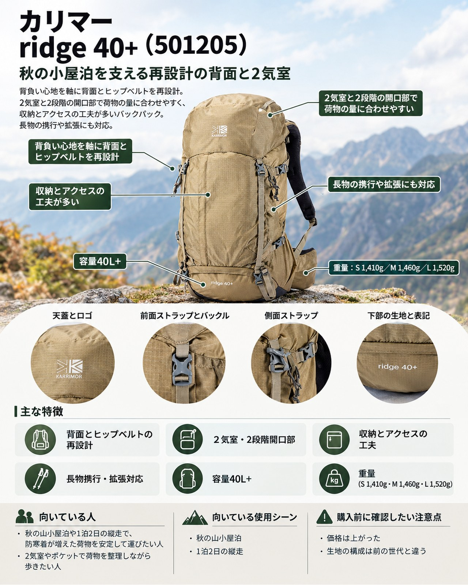

10月も半ばを過ぎ、3,000m級の山では初冠雪の便りが届く時期になりました。山小屋の営業終了も増え、低気圧と高気圧が交互に通って天気も変わりやすくなります。この時期の小屋泊や1泊2日の縦走では、ダウンなどの防寒着、レインウェア、ツェルトなどの非常装備が加わり、夏より荷物がひと回り増えます。そんな秋の山行に合わせて紹介したいのが、カリマーの定番中型リュック「ridge 40+（リッジ 40プラス）」です。1999年に登場したridgeシリーズの最新版で、2025年2月から順次発売されています。
基本スペック
※仕様・価格は2026年10月16日時点のカリマー公式オンラインストアの表示です。
| 項目 | 内容 |
|---|---|
| 商品名 | ridge 40+（リッジ 40プラス） |
| 品番 | 501205 |
| 容量 | 40L+ |
| 重量 | S 1,410g／M 1,460g／L 1,520g |
| 寸法 | H68×W35×D26cm |
| 背面長 | S 42cm／M 47cm／L 52cm |
| 素材 | 210D 6X6 R/S NY（ナイロン100%） |
| カラー | K.Orange、Midnight、British Greige、Black |
| 価格 | 33,550円（税込） |
背負い心地を軸に背面とヒップベルトを再設計
今回のモデルチェンジで最も大きく変わったのが背面まわりです。カリマーの発表では、背面システムとヒップベルトの形状を再設計し、重心を体の中心に近づける「ハイバックシェイプ」を採用しました。肩と腰のパッドにはメッシュを組み合わせ、フィット感と放熱性の両立を図っています。長さ・幅・角度などは日本人の体格に合わせて設計したとされています。公式ページでも、背面に内蔵した3Dバックパネルと立体構造のヒップベルトを組み合わせて、フィット感と安定性を高めたと説明しています。「背負いやすく、疲れづらい」をコンセプトに背面システムなどを再設計したモデルとして取り上げており、紹介した媒体はどれもこの背面の再設計を一番の特徴に挙げています。防寒着や水で重くなりやすい秋の小屋泊では、荷物の重さを腰でしっかり受け止められることが歩きやすさにつながります。
背面長を3サイズから選べる
S（42cm）、M（47cm）、L（52cm）の3サイズがあり、体に合う背面長を選べます。購入するときは、店頭で背面長を測ってから選ぶと安心です。
2気室と2段階の開口部で荷物の量に合わせやすい
本体は2気室構造で、寝具や着替えなど山小屋に着くまで使わない物を下の気室に分けて入れられます。開口部は巾着式で、内容量を2段階に調整できます（公式ページより）。防寒着が増える日は開口部を広げて詰め込み、荷物が少ない日は小さくまとめる、という使い分けができます。
収納とアクセスの工夫が多い
雨蓋は外側と内側の両方にポケットがあり、内側のジッパーポケットには専用のレインカバーが付属して収まっています。天気が変わりやすい秋の稜線で、カバーをすぐ取り出せるのは助かります。ほかに、フロントのオープンポケットとメッシュポケット、ナルゲンボトルや山専ボトルの収納例が載っている大容量のワンドポケット、クイックアクセスオープニング、ホイッスル付きのチェストベルト、ヘルメット固定ループを備えます（公式ページより）。
長物の携行や拡張にも対応
下部とサイドのコンプレッションベルトは長めになり、上下ともバックル式になりました。長尺物や蛇腹式のマットを挟んで運べます。別売りのTCシリーズ（ヒップベルトポーチ、ショルダーポーチ、パデッドポーチ、フロントバッグ）を取り付けて拡張することもできます。
デメリット・注意点
- 価格は上がった：現行モデルは33,550円（税込）です。2022年にアップデートされた前の世代のridge 40は24,750円（税込）で、比べると8,800円高くなっています。
- 生地の構成は前の世代と違う：公式ページの素材表記は210Dナイロンのみです。前の世代はボトムとフロントに420Dナイロンを使っていたので、岩に擦りつける場面が多い使い方では扱いに気を配りたいところです。
- 付属しない物がある：バンジーコードループはありますが、公式ページによるとネイビーのコードは付属しません。また、TCシリーズのポーチ類もすべて別売りです。
- 使った人の声はまだ少ない：今回調べた範囲では、ridge 40+を実際に背負った詳しい使用例は見つからず、媒体の紹介はメーカー発表に近い内容でした。背負い心地は体格で大きく変わるので、店頭で荷物を入れて試すのがおすすめです。
向いている人・向いていない人
◎向いている人
- 秋の山小屋泊や1泊2日の縦走で、防寒着が増えた荷物を安定して運びたい人
- 2気室やポケットで荷物を整理しながら歩きたい人
- 背面長を3サイズから選んで、体に合うザックを使いたい人
△向いていない人
- 1gでも軽くしたい、ウルトラライト志向の人
- 価格をできるだけ抑えたい人
- 岩稜でザックを擦りながら登る使い方が多い人
まとめ
ridge 40+は、長く作り継がれてきたカリマーの定番中型ザックを、背負い心地を中心に作り直したモデルです。3Dバックパネルと立体構造のヒップベルト、2気室構造、2段階の開口部、付属のレインカバーと、秋の小屋泊で荷物が増えたときに頼れる機能がそろっています。一方で前の世代より価格は上がっており、実際に使った人の声もまだ多くありません。気になる人は店頭で背面長を合わせ、荷物を入れて背負い比べてみてください。
この記事で紹介した商品
価格・重量・在庫は各ブランド公式サイトの記載（確認日つき）にもとづきます。商品を押すと、購入先を選べます。
この記事にはアフィリエイト広告が含まれます。リンク先での購入により、当サイトが報酬を受け取る場合があります。山行の前には、最新の気象とルートの状況を必ずご確認ください。